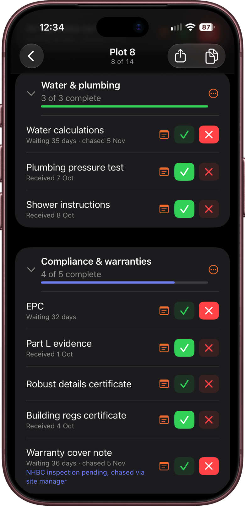
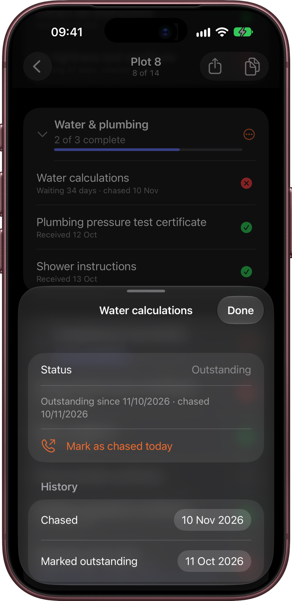
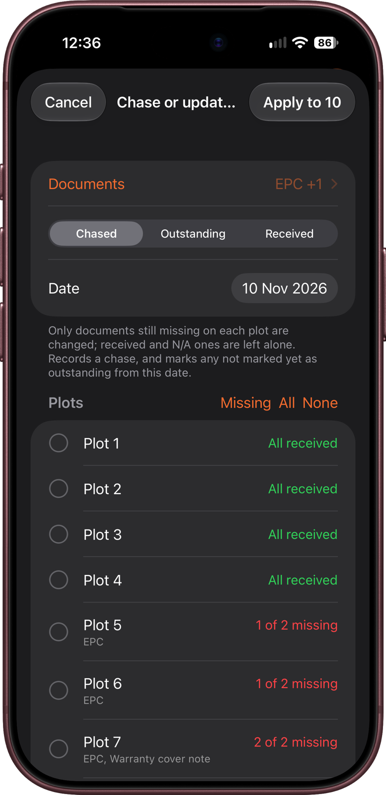
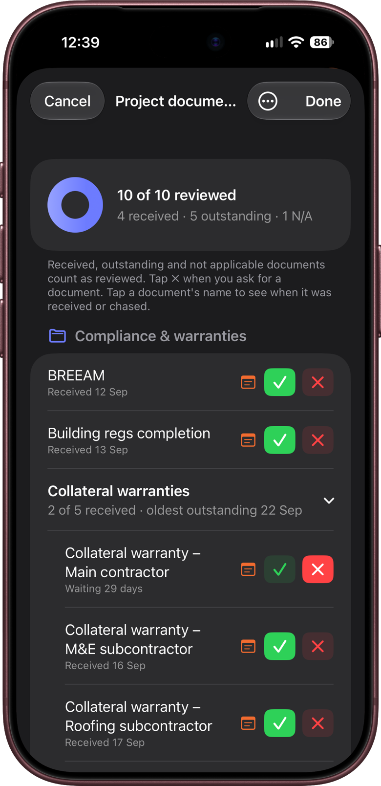
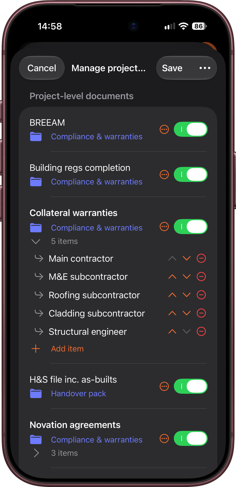

Chasing paperwork is often the slowest part of a handover. KeyCheck records when each document was asked for, chased and received. You can see how long you've been waiting for something, show when it arrived, and list everything still missing on the progress report.
This chapter covers marking documents, the dates KeyCheck keeps, chasing lots of plots at once, and the project's own site-wide documents.
Plot documents and project documents
KeyCheck has two kinds of document:
- Plot documents are needed for every plot, such as the gas safety certificate, EPC or warranty cover note. They're under Instructions & certificates on each plot's form.
- Project documents are needed once for the whole site, such as the fire strategy, collateral warranties or the O&M manual. They're on the project's Project documents screen.
Both work the same way. Which documents are on each list is set up in Project setup → Form items (chapter 3) for plot documents, and on the Project documents screen for project documents (see below).
Marking a document
Each document has a status icon on the right. Swipe across the document, or tap the icon and choose a status:
| What you do | Status | Icon | Meaning |
|---|---|---|---|
| Swipe right | Received | Green tick | You have the document. |
| Swipe left | Outstanding | Red cross | You've asked for it and are waiting for it. |
| Nothing yet | Not checked | Empty circle | Nobody has looked at this document yet. |
| Tap the icon, then choose Not applicable | Not applicable | Grey dash | This document doesn't apply to this plot. |
Swipe all the way across to mark it in one movement, or swipe a little way to see the buttons. Swiping left also shows Note. To clear a status back to Not checked, swipe the same way again and tap Clear, or tap the icon and choose Clear.
Mark a document Outstanding on the day you ask for it. That's when its waiting time starts on the progress report. Documents left as Not checked are still listed as missing, but with no waiting time.
At the top of Instructions & certificates, All documents shows how many are done, for example "18 of 24 complete". Received and Not applicable documents count as complete. Outstanding ones don't, because they haven't arrived yet. Each group, such as Heating & hot water, has its own count. Tap a group's name to fold it away when you've finished with it.

Not applicable
Not applicable is for one-off exceptions, such as no gas certificate on an all-electric plot.
- Tap the document's status icon, or touch and hold the document.
- Choose Not applicable.
The name turns grey, "Not applicable" appears under it, and it no longer counts as missing on reports. The handover PDF shows it as N/A. To undo it, touch and hold again and choose Mark as applicable.
If a document never applies to a whole tenure, for example Shared Ownership plots, hide its group for that tenure with Tenure exceptions instead (chapter 3), so it doesn't appear on those plots at all. If it isn't needed anywhere on the site, switch it off in Form items.
Notes
Swipe left on a document and tap Note to add a note, such as "Assessor booked for Friday". The note shows in purple under the document's name. You can also tap the status icon and choose Add note, or touch and hold the document and choose Add / edit note.
Notes appear on the handover PDF and, for documents still missing, on the progress report.
The dates KeyCheck keeps
Whenever a document's status changes, KeyCheck saves the date. You don't have to do anything. A short grey line under the document's name shows where it stands, for example:
- Requested today
- Waiting 5 days · chased yesterday
- Received 3 Nov
The full dates are on the document's history screen, the progress report and the PDFs.
Seeing a document's history
Tap the document's name (or touch and hold it and choose Dates and history). The history screen shows:
- its current Status
- every change, newest first: when it was marked outstanding, chased, received, marked N/A or cleared
- on shared projects, who made each change. That comes from Settings → You → Your name (chapter 2). If you haven't entered your name, the screen reminds you.

Correcting a date
Ticked something off late? Tap the date beside the entry and pick the right day. For example, if a certificate arrived on Monday but you only ticked it on Wednesday, change the Received date to Monday. Reports use the corrected date. Dates can't be in the future.
Recording a chase
When you chase a document that still hasn't arrived:
- Touch and hold the document. (This option only appears when the document is Outstanding.)
- Choose Mark as chased today.
The grey line and the progress report then show the date of the latest chase.
You can also tap Mark as chased today on the document's history screen. There it works for Not checked documents too, and marks them Outstanding from today, so their waiting time starts.
To remove a chase recorded by mistake, swipe left on it in the history and tap Delete. Only chases can be deleted. Other entries stay, so the record of when things happened is complete.
Clearing a document's history
To start a document's dates again, touch and hold it and choose Clear history, then confirm. The button is also at the bottom of the history screen.
This removes all of the document's dates, but its current status stays as it is. On a shared project, the history is cleared for everyone.
Marking a whole group on one plot
The ⋯ button beside each group's name changes every document in that group at once. The button beside All documents does the same for every document on the plot. Choose:
- Mark all as received
- Mark all as outstanding
- Mark all as not applicable
- Clear all
These changes are dated too. A banner offers Undo straight afterwards.
Chasing or updating many plots at once
On a big site you'll often chase or receive the same documents for lots of plots at once. For example, you might chase the gas certificates and EPCs for a whole street in one phone call, or receive a batch of EPCs by email.
- Open the project and tap Project setup (the sliders button, top right).
- Choose Chase or update documents….
- Tap Documents and tick the ones you want. All beside a group's heading ticks the whole group. Then go back.
- Under Mark as, choose what happened:
- Chased: you've chased them.
- Outstanding: you've just asked for them. Their waiting time starts from the date you set.
- Received: they've arrived.
- Check the Date. It starts as today; change it if the chase or delivery was earlier.
- Choose the plots. KeyCheck ticks every plot that's still missing any of the chosen documents and isn't handed over yet. Use Missing, All or None to change the selection, or tap plots one by one. Each plot shows what it's missing, for example "2 of 3 missing: Gas safety certificate, EPC".
- Tap Apply to (the button shows how many plots are ticked) and confirm. The confirmation says exactly what will happen, for example "Chase 2 documents on 18 plots?".

Good to know:
- Only documents still missing are changed. If a plot already has its EPC, chasing "Gas and EPC" records the chase on the gas certificate only. Received and N/A documents are never changed here.
- Chasing a Not checked document also marks it Outstanding from that date, so the report can show how long it has been waited for.
- Documents hidden for a tenure are skipped on plots with that tenure.
- There's no undo. If you chase the wrong document, remove the chase from each plot's history.
- This screen is for plot documents only. Project documents are updated on their own screen.
Copying documents between plots
Copy from, Paste setup and Apply setup to several (chapter 4) can copy document statuses from one plot to another. The copied statuses are dated with the day you copy them, not the dates on the plot you copied from, because this plot's documents won't necessarily have arrived on the same days.
Project documents
Open a project and tap Project documents, near the top. The row shows how many are complete, for example "6 of 11 complete". (Complete means Received or Not applicable. Outstanding documents are still waiting, so they don't count.)
The screen works like the documents on a plot: swipe or tap the status icon to mark a document, and tap a name for its history. Swiping left shows Outstanding and More. More, or touching and holding a document, lists Add note, Dates and history, Mark as chased today (for outstanding documents), Rename…, Convert to bundle…, Clear history and Remove from project, with Received, Outstanding and Not applicable as a row of buttons at the top.
At the top, a ring shows how many are complete, with a summary such as "4 received · 2 outstanding · 1 N/A".
When you've finished, tap Done to save your changes. Cancel closes the screen without saving them.

Choosing the project documents
The first time, the screen is empty. Tap Add documents to choose some. Later, tap the ⋯ button (top right) and choose Manage document list. Then:
- Add project documents from library lists the site-wide documents KeyCheck knows about, such as fire-safety records, warranties and novation agreements. Tick the ones you need and tap Add.
- Add custom project document adds one of your own. Type its name, then tap the folder row beneath it to choose an existing group. Choose New group… if none of the groups fit.
- Add high-risk building documents adds the bundles for a higher-risk building (see High-risk buildings below).
- Switch documents on or off, and change which group each one is in.
Tap Save to keep the changes.
To take a document off the project, touch and hold it and choose Remove from project (or swipe left and tap Delete). If you add it back later, what was recorded for it is still there.
Bundles: documents made of several parts
Some requirements are really several separate documents. Collateral warranties, for example, come from the main contractor and from each designer and some designing subcontractors. Ticking one "Collateral warranties" document when the last one arrives would hide which ones you're still waiting for.
A bundle solves this. It's one heading with a list of items underneath, and each item is tracked on its own. In the Riverside Business Park sample project, Collateral warranties is a bundle with five items, one each from the main contractor, M&E subcontractor, roofing subcontractor, cladding subcontractor and structural engineer.
To make a bundle:
- On the Project documents screen, touch and hold the document and choose Convert to bundle…, then confirm. (Or, in Manage document list, use the options button beside it and choose Convert to bundle.)
- In Manage document list, rename the bundle if you need to, then tap Add item for each part, for example "Roofing subcontractor".
- Tap Save.

On the Project documents screen, tap the bundle to open or close its list of items. Each item has its own status, dates, chases and note, just like any other document. The bundle shows how far along it is, for example 3 of 5 received, and becomes Received by itself when every item has arrived. Items marked N/A are left out of the count.
Good to know:
- Converting a document keeps its old status, note and history, but they no longer decide the bundle's status. That comes from its items.
- To save space, items are shown without the bundle's name in front. An item named "Collateral warranty – Roofing subcontractor" shows as "Roofing subcontractor", on screen and in the PDFs.
- In Manage document list, bundles start closed, so a long list is easy to scroll and reorder. Tap the item count under a bundle's name (for example 10 items) to show or hide its items.
- Items left without a name are removed when you save the document list.
- To rename a bundle or an item, touch and hold it and choose Rename….
- To turn a bundle back into a single document, touch and hold it and choose Convert to single document…. You can keep its items as separate documents or remove them. The document goes back to the status, note and history it had before.
Planning has its own experimental section at the top of Project documents. It tracks the site's planning decisions, conditions, discharges and S106 obligations, and is covered in chapter 7.
High-risk buildings
For a higher-risk building (18 m or taller, or at least 7 storeys, with at least 2 homes), KeyCheck can add a ready-made set of bundles for the Building Safety Regulator's paperwork. Switch on High-risk building when you create the project (chapter 3), or for an existing project, open Manage document list and tap Add high-risk building documents, then Save.
They're listed first, under Building safety (HRB):
- Gateway 3: the completion certificate application and certificate, as-built information, the final construction control plan and change control log, the fire and emergency file, the declarations from the client, principal designer and principal contractor, and a partial completion strategy for phased handovers.
- Golden thread handover: confirming the building is registered with the regulator, handing the golden thread (the building's official digital record) to the accountable person, key building information, and information for the safety case.
- Fire safety information: Regulation 38 fire safety information, the fire risk assessment, resident fire instructions, and the sprinkler, smoke control and riser certificates. If the project already has any of these, they're moved into the bundle with what was recorded for them.
- Gateway 2 & build: the approval to start work, the plans submitted with it, and the records kept during the build, such as the change control log and reports of serious safety incidents. This starts switched off, because it's mostly done before the site team is involved. Switch it on in Manage document list if you track it.
The usual Building regs completion and Building regs certificate documents are switched off, because on a high-risk building the regulator's completion certificate replaces them.
Every item can be renamed, switched off or marked N/A, and you can add your own. The list is a checklist to help you keep track of the paperwork, not a guarantee that a building meets the regulations.
Exporting the project documents
Tap ⋯ → Export PDF to make a PDF of the project documents, with their statuses, dates and notes, ready to email or print.
Where the dates show up
- Progress report (chapter 11): What's changed lists documents received and chased in the period. Documents not received lists everything still missing on plots that aren't handed over, with how long you've waited and when it was last chased.
- Handover PDF (chapter 10): each plot's documents, with N/A shown where it applies.
- Insights (chapter 9), opened by tapping the progress summary at the top of a project: includes a list of Project documents still needed, with a Copy button that puts it on the clipboard, ready to paste into an email.
Employer's agents and contract administrators usually chase paperwork by phone and email rather than on site. Before a progress meeting, use Chase or update documents… to record that day's chases and arrivals for the whole site in one go, and correct any dates from the history screen. The progress report's Documents not received then shows how long each document has been outstanding and when it was last chased. On a shared project (chapter 12), everyone sees the same dates, and the history shows who recorded each one.